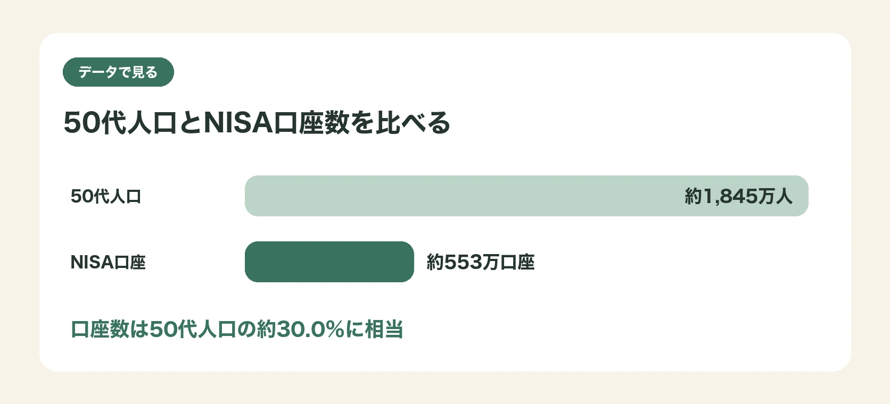
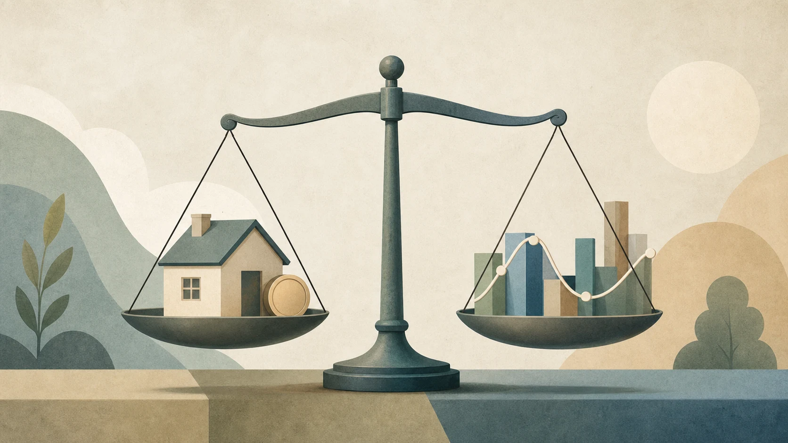
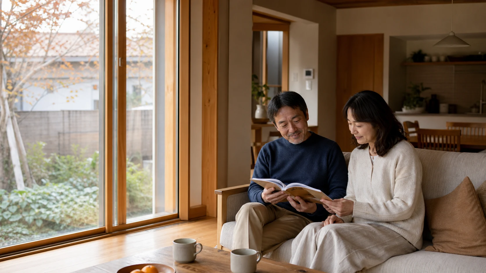

50代人口は約1,845万人。それに対し、50歳代のNISA口座は約553万口座です。基準日は異なりますが、単純比較すると約30.0%。「50代の3人に1人に近い」規模で、NISAはぐっと身近なお金のテーマになっています。ただし、これは人口と口座数の比較であり、新NISAで実際に投資している人数や、2024年以降に新しく始めた人数を示すものではありません。この記事では、この身近な数字を入口に、住宅ローンや修繕費との優先順位を整理します。
1. 50代人口の約30%に達するNISA口座
総務省統計局の人口推計では、2026年2月1日現在の50〜54歳は976万0千人、55〜59歳は868万9千人で、50代人口は合計1,844万9千人です。一方、金融庁の2025年12月末調査では、50歳代のNISA口座数は553万1,813口座でした。両資料の基準日は約1か月ずれており、口座数は買付けの有無や新規開始人数を示しません。
この二つを単純に比べると、NISA口座数は50代人口の約30.0％に相当します。言い換えれば「3人に1人に近い」規模です。
この数字は、50代の口座開設規模を示すものです。個々の家計でNISAを最優先すべきことを示すものではなく、住宅ローンや修繕・設備更新費との順番は別に考えます。
2. 身近になったからこそ、家計の順番を考える
子どもの学費や習い事にかかっていたお金が一段落し、退職金や年金の輪郭も見え始める50代。同時に、住宅ローンの残高、修繕・設備更新費、老後の生活費という、これから確実にかかる支出も視野に入ってきます。手元にできた「お金の余白」を新NISAに回すべきか、住宅ローンの繰り上げ返済に充てるべきか、修繕・設備更新費として取っておくべきかは、家庭ごとに判断が必要です。
新NISA（少額投資非課税制度）は2024年に制度が拡充され、年間投資枠や非課税保有期間が広がりました。ただし、50代全体の口座規模と、「自分の家計にとって今それが最優先か」という判断は分けて考える必要があります。
周囲の利用状況は、資産形成を考え始めるきっかけにはなります。しかし、住宅ローンを返済しながらの資産形成では、ローンの金利、修繕・設備更新費、「元本割れしても取り返せる時間があるか」という年齢的な事情まで、あわせて考える必要があります。

出典：金融庁「NISA口座の利用状況調査」／総務省統計局「人口推計」。注：基準日は異なります。口座数は実際の投資人数・新規開始人数を示しません。553万1,813口座÷1,844万9千人＝約30.0％。人口は2020年国勢調査基準の確定値で、2025年国勢調査集計後に更新予定です。
3. 繰り上げ返済・投資・修繕・設備更新費を比べる前に
新NISA、住宅ローンの繰り上げ返済、生活防衛資金、修繕・設備更新費への備え。これらは性質がまったく異なるお金の置き場所です。
- 新NISAでの投資：非課税というメリットがある一方、値動きがあり、必ず増える保証はありません。
- 繰り上げ返済：将来支払うはずだった利息の負担を、確実に減らせます。ただし、手元資金が減ることや、住宅ローン控除を受けている期間は効果の出方が変わる点に注意が必要です。
- 生活防衛資金：病気や失業など不測の事態に備える、すぐに引き出せるお金です。これが不足したまま投資や繰り上げ返済を進めるのは避けたいところです。
- 修繕・設備更新費：外壁、屋根、給湯設備など、いずれ発生する費用です。金額も時期もある程度予測できます。
どれか一つが常に正しいわけではありません。また、家庭ごとの借入条件や資産状況によって優先順位は変わります。
4. 優先順位を決める前に、まず確認したい3つの数字
優先順位を決める前に、次の3つを確認しておくことをおすすめします。
① 住宅ローンの金利と残高 金利が高いほど、繰り上げ返済によって負担は小さくなります。逆に低金利で借りている場合、無理に繰り上げ返済を急ぐ必要は薄れます。金利のタイプ（変動・固定）や、今後の返済予定表を一度手元に用意しましょう。
② 生活防衛資金の有無 必要な金額は、収入の安定性、家族構成、毎月の支出によって異なります。急な支出にも対応できる手元資金があるかを、投資や繰り上げ返済より先に確認します。
③ 修繕・設備更新費の見込み 築年数や設備の状況によって、今後数年でどの程度の修繕・設備更新費がかかりそうか、大まかにでも把握しておくことが重要です。見込みが立たないまま資金を投資に回すと、いざというときに住宅ローンとは別の借り入れが必要になることもあります。

5. 自分の優先順位を決める
3つの数字が見えてきたら、次のような順番を一例として考えると整理しやすくなります。
- 生活防衛資金が不足していれば、まずそこを優先する。
- 住宅ローンの金利が高め、あるいは変動金利で今後の上昇が不安な場合は、繰り上げ返済も選択肢に入れる。
- 修繕・設備更新費の見込みが立っていない場合は、その分を別枠で確保する。
- そのうえで余力があれば、新NISAなど資産形成に回す。
この順番は絶対的なものではなく、家計の状況、リスクへの考え方、住宅ローン控除の残り期間などによって変わります。判断に迷う場合は、特定の金融商品を売る立場にない、独立系のファイナンシャルプランナーや、住宅金融支援機構の相談窓口など、中立な立場の専門家に相談することをおすすめします。
